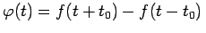

Inhalt Index DeskTop Bronstein

 Integraltransformationen Fourier-Transformation Eigenschaften der Fourier-Transformation Bildfunktionen spezieller Funktionen
Integraltransformationen Fourier-Transformation Eigenschaften der Fourier-Transformation Bildfunktionen spezieller Funktionen


Die FOURIER-Transformierte für den bipolaren Rechteckimpuls (s. Abbildung)
| (15.98a) |
ergibt sich unter Berücksichtigung der im Beispiel unipolarer Rechteckimpuls als (A.1) angegebene Gleichung für . Durch die FOURIER-Transformation gemäß (15.86b), (15.86c) erhält man
| (15.98b) |
woraus mit (15.97a) folgt
| (15.98c) |